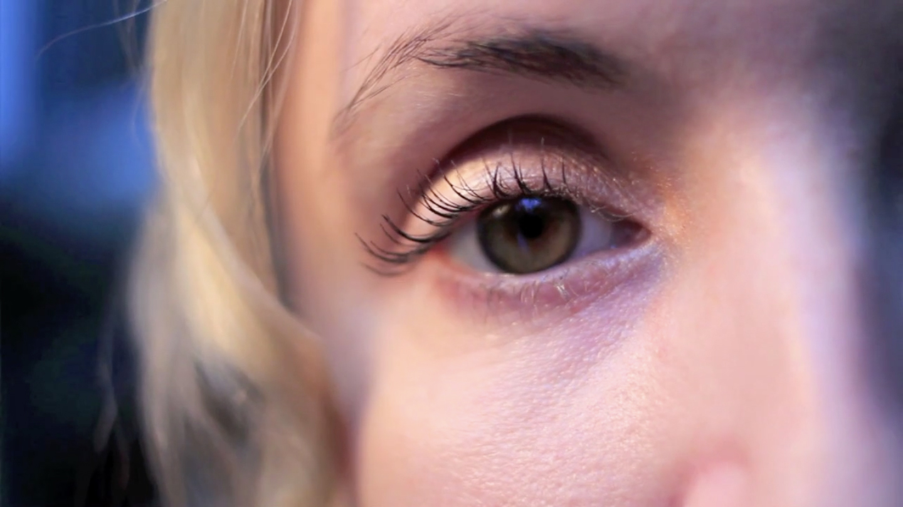

ANTROPY
short film
ROLE
Cinematographer, Editor
TOOLS
Final Cut Pro, Canon DSLR
TEAM
Carmela Mok, with guidance from Nike Hatzidimou
Antropy is a short documentary about Angela Gooliaff, a local conceptual artist living in Vancouver. With her background in Science, Biology and Psychology, she creates art that taps into conformity, communication and connection. Through the Teens @ Evergreen Cultural Centre Film Program, I had the lead role in developing, filming and editing this film.
PRE-PRODUCTION
We began the program with the task of finding a local emerging artist that we thought would be an interesting subject. Through some research, I found Angela Gooliaff and thought that with her background in science playing a big role in her art, it could make her a very unique focus for the film. In order to create a documentary that really shows who Angela is and what her inspirations and motivations are, my team and I created questions to ask her in an interview to dig deeper.
An example of the interview portion.
An example of the B-roll.
CINEMATOGRAPHY
The film switches back and forth between two parts: the interview portion and the B-roll. Since we wanted to set part of the film at Angela's home, where she creates her art, the interview portion relied heavily on lighting. With no access to lighting equipment, we depended on natural lighting and lighting fixtures.
The B-roll footage helped add meaning and dynamism to the film because it shows more than just the stationary shot of the interview, provding more depth and connection. By adding interesting compositions that solidified and followed the dialogue, it emphasized what was being said.
EDITING
For this project, the B-roll acted as visual engagement for the viewers, complementing the static interview portion. It helped create a visual reference for the dialogue throughout the film so it was important to edit certain shots at certain times to match up with the dialogue.
An example of the B-roll.
CHALLENGE
The biggest challenge of this project was presenting Angela's main piece, "Entropy" in the film. Since it wasn't in a gallery while we were filming, we had to resort to using a photo of the work in a gallery. However, because Entropy is a series of 13 drawings, they were not visible in the image. In order to show a closer look at "Entropy," we asked Angela to hold each of the drawings so we could film each of them close up.
One of the shots of Entropy.
REFLECTION
This project introduced me to the process of filmmaking. It taught me about the importance of composition, sound and interviews in films. Additionally, communication was also an important aspect of this project because my team and I wanted to make a film that fully represented Angela and her work, so kept in constant communication with Angela to make sure that we were presenting her in the best way possible.
The full Antropy film. (3:26)